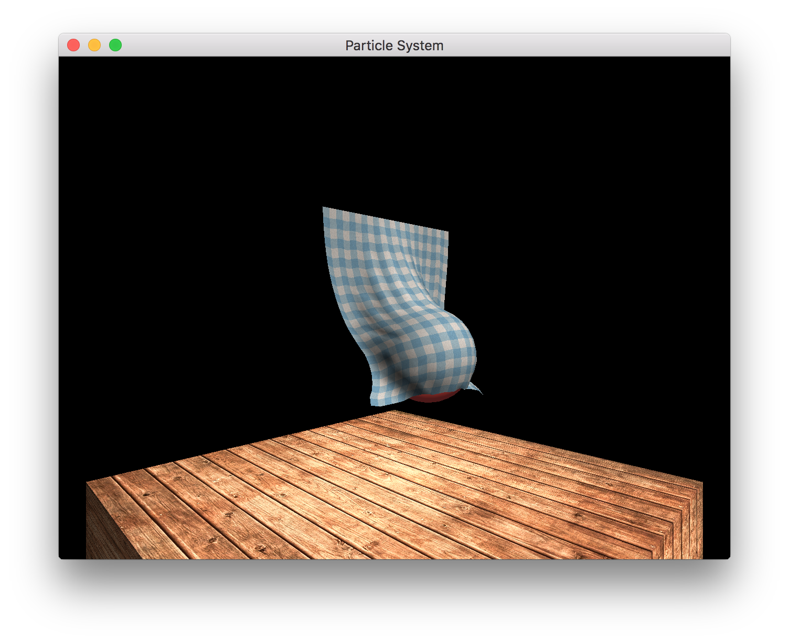

The controls for the application are as follows:
| [1] | Show/Restart the Cloth Simulation |
| [2] | Show/Restart the SPH Simulation |
| [3] | Show/Restart the Shallow Water Simulation |
| [+/-] | Allow the camera to be moved in and out of the screen |
| [Arrow Keys] | Allow the camera to be moved vertical and horizontally |
| [r] | Resets the camera to the default location |
| [space] | Pause/resume the simulation |
| [`] | Prints the instantaneous FPS |
| Clicking and dragging the screen will rotate the camera. |
The demo below highlights several of the key features of my cloth simulator namely: textured cloth and interaction with spherical objects. It is implemented using a Eulerian integrator and runs in realtime. Of all the demos in this assignment, the cloth employs the best rendering. The camera controls can also be seen in this demo.
The 3D SPH demo is shown in the video below. In order to ensure that it ran in realtime, large particles were used. I would like to implement this simulaiton using the GPU so that the simulation can include more particles and have more photorealistic rendering.
Finally, I have implemented a 1D shallow water simulation. It runs in realtime and uses a Midpoint integrator. Again, I would have liked to improved the rendering at some point in the future.
After examining the FPS, the simulations do run in realtime. The frame rate remains around 60FPS. It would occasionally dip to something a little lower, but then bounce back to the 60FPS.
I have only one submission for the art contest. The conbination of lighting and wrinkles in the cloth make it appear very realistic.
While creating the SPH simulation, I forgot to setup interesting initial conditions which resulted in the simulation below. I thought it was funny, so I thought I would share it.
I used this tutorial in order to setup OpenGL with SDL. Much of the OpenGL boiler plate was adapted from the Apple's OpenGL sample project. The math library that I developed uses much of the code provided in this sample project.
Also I found the texture I am using for the wood texture here. The cloth texture was found here.
The only two frameworks that I use in this project at SDL and SDL_Image (in order to load the textures). I coded everything else. This includes the scene graph, tessellation of various primitives, as well as wrappers classes for OpenGL.
{kind=link}